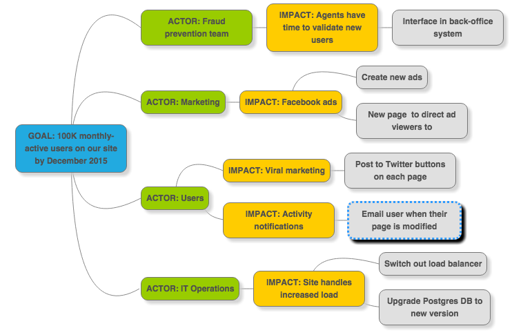

En tant que Product Owner
Créé avec ♥♥♥ en novembre 2015
F pour le fullscreen et S pour les speakernotes
Plan
- Product Owner, un rôle agile
- La Vision
- La Roadmap
- Pause
- Les User Stories
- Le BDD
- La Démonstration
Product Owner
Le terme PO a pour origine la méthode Scrum.
Il est l'un des 3 rôles de l'équipe,
avec le Développeur et le Scrum Master.
Définition en 2 phrases
“The Product Owner is responsible for maximizing the value of the product and the work of the Development Team.
How this is done may vary widely across organizations, Scrum Teams, and individuals.”— Scrum Guide
Dans l'organisation
Le Product Owner est une personne,
pas un comité.
Il est LE responsable du produit.
Avec mes clients

Avec mes clients
- Bâtir la vision
- Organiser le besoin (sous forme de User Story)
- Définir la valeur
- Recueillir les retours
Avec mon équipe

Avec mon équipe
- Donner du sens
- Communiquer la vision
- Définir le Sprint Goal
- Prioriser les user stories
- Les valider ou les rejeter
- Répondre aux questions, accompagner
Avec l'aide du Scrum Master
Le Scrum Master est votre allié,
c'est son rôle de vous aider.
The big picture

Le pouvoir de dire non

Les qualités du PO
- Déborder d'empathie
- Aimer le contact direct
- Etre curieux
- Vis ma vie d'utilisateur, de développeur
- Bon négociateur
- Avoir l'esprit critique
- Savoir être souple
Les autres qualités du PO
- C'est un leader
- Il motive l'équipe
- Emet des signes de reconnaissance
- Fait la promotion de son produit
- Qui communique de façon transparente
- Sait expliquer, rendre accessible
- Ne cache rien
- Au contraire, il montre !
Le plus du super PO
Une sensibilité à la technique lui permet :
- d'optimiser le travail de l'équipe lors de la priorisation,
- de comprendre pourquoi réduire la dette technique a une valeur métier.
La dette technique
- Code de mauvaise qualité, absence de refactoring
- Diminution de la productivité de l'équipe.
- Risque de bugs de regression plus important.
- Manque de tests unitaires
- Plus d'anomalies en phase de qualification.
- Risque de devoir décaler la date de livraison.
- Composant tierce obsolète
- Pas de support en cas de crash en production.
- Risque d'incompatibilité lors de l'upgrade d'un autre composant.
- Technologie vieillissante
- Difficile de trouver des compétences intéressées.
Le PO ne doit pas
- Considérer que tout est simple
- Aider l'équipe à estimer
- Affecter les tâches
- Rédiger la spécification détaillée ;-)
Vision
We know why our work is important and how we'll be successful.
Bâtir la vision
- Un nouveau système pourquoi faire ?
- Comment mener un projet sans en connaître l'objectif ?
- Comment savoir ce qui est important ?
La vision doit être formalisée
Comment la bâtir ?
- Avec les parties prenantes, avec l'équipe !
- La coopération suscite la créativité, assure l'alignement.
- Etre agile, c'est ne jamais travailler seul.
Voici des outils pour la définir mais aussi pour la diffuser.
Elevator Pitch
Le prix est un critère important pour les clients qui réservent des voyages en ligne. Les hôtels vous laissent déconnectés de la ville et de sa culture. Il n'y a pas de solution aisée pour réserver une chambre chez quelqu'un ou proposer une chambre.
AirBed&Breakfast est une plate-forme web où les utilisateurs peuvent louer leur logement pour héberger des voyageurs.

Personae
Se mettre à la place des utilisateurs
- Je suis Prénom Nom, sexe, age
- Quel est mon rôle ?
- Quelles sont mes attentes ?
- Quelles sont mes douleurs ?
- Je fais souvent, je dis souvent ...
Exemple de Persona

Impact Mapping
- Une visualisation du périmêtre et des hypothèses sous-jacentes, créée de manière collaborative.
- Une mind-map qui se construit en répondant aux questions : pourquoi, qui, comment, quoi.

WHY ?
- L'unique objectif principal
- Il est SMART
- Les 5 pourquoi
Exemples :
- Diminuer le délai de facturation de 20%
- Démarrer les ventes au Brésil en mars
WHO ?
- Qui peut produire le résultat attendu ?
- Qui pourrait l'empêcher ?
- Qui va acheter / utiliser notre produit ?
- Qui sera impacté ?
Exemples :
- Les randonneurs qui emportent un smartphone
- Les valideurs de l'Apple Store
HOW ?
- Comment le comportent des acteurs doit-il changer ?
- Comment peuvent-ils nous aider à atteindre notre objectif ?
- Comment peuvent-ils nous empêcher de réussir ?
Exemples :
- Inviter leurs amis à les rejoindre dans la communauté
- Installer le logiciel sans faire appel au support
WHAT ?
- Que pouvons-nous réaliser, en tant qu'entreprise ou équipe de développement, pour encourager ses impacts ?
- Il s'agit de définir le périmètre, les livrables.
Exemples :
- Homepage adaptée au mobile avec le formulaire d'achat
- Le client peut imprimer lui-même ses tickets
Exemple de Map d'Impacts

Why Who How What
Une carte d'impacts met tous les livrables dans le contexte des impacts qu'ils sont censés créer. Cela permet de comparer les livrables et d'éviter de sur-investir dans des parties moins importantes de la carte.
En connectant les livrables aux impacts et aux objectifs, une carte d'impacts montre la chaîne de raisonnement qui a mené à une idée de fonctionnalité. Cela permet de mieux ré-évaluer ces décisions lorsque de nouvelles informations sont accessibles suite aux livraisons précédentes.
Atelier
A vous de jouer, vous avez 20 minutes.
Autres outils
Empathy Map
Carte Interview Problème
Business Model Canvas
Lean Canvas
Et n'oubliez pas la collaboration !
Roadmap
Scrum.
The End
- Cette présentation utilise reveal.js de Hakim El Hattab
- Elevator Pitch sentence issue de 15Marches
-
Exemple d'Impact Map de Kevin Albrecht
- Illustrations du KISS empruntées au site bouzin-agile
- Photo de tableau agile empruntée au site The Agile Pirate
- Marshmallow Challenge et illustration en provenance du site éponyme